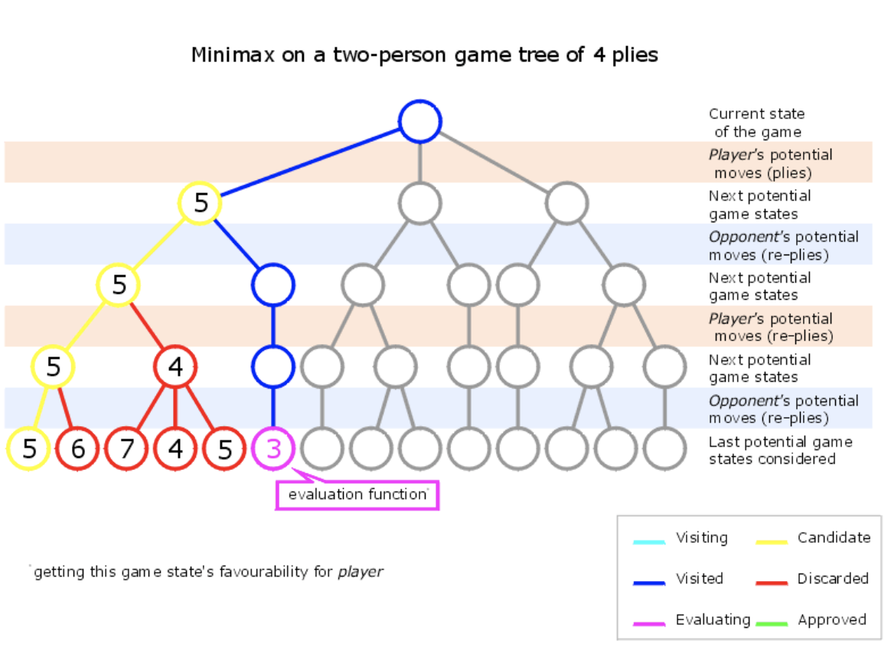
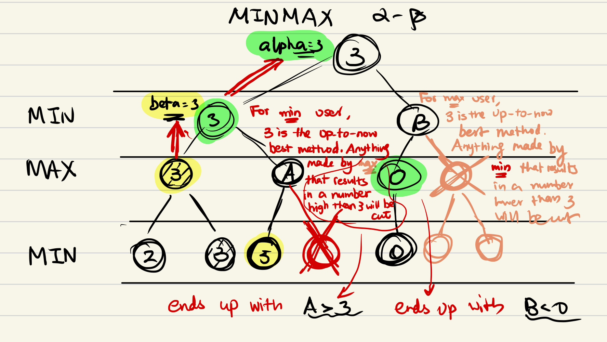

Minimax (Minmax)
The minimax algorithm (also called the MinMax algorithm) is an algorithm that applies to game theory for two-player zero-sum games.
Situation
- Deux joueurs \(I\) (Vous) et \(P\) (Votre adversaire).
- Un "score" \(s\) décrit le jeu, le but pour \(I\) est de maximer \(s\), et celui de \(P\) est de le minimiser.
- \(s = \{+\infty\}\) représente \(I\) a gagné, \(s = \{-\infty\}\) représente \(P\) a gagné.
Minmax (Basique)
Principe
-
Initialisation :
- On descend jusqu'à une profondeur \(p\) de l'arbre.
-
Rechercher tous les cas possibles :
- Partir d'une profondeur \(p\) de l'arbre, puis on remontre.
- Lorsque on remontre une profondeur,
- \(I\) va choisir entre les fils le plus grand nombre.
- \(P\) va choisir entre les fils le plus petit nombre.
- Lorsque tous les fils sont calculés, on obtient un valeur final pour cette noeude de profondeur \(p-1\), on remontre encore une fois.
- Ces étapes sont répétées jusqu'à on obtient le valeur de la racine, ensuite on initialise par descendre jusqu'à autres noeuds à une profondeur \(p\).
function minimax(node, depth, maximizingPlayer) is if depth = 0 or node is a terminal node then return the heuristic value of node if maximizingPlayer then value := −∞ for each child of node do value := max(value, minimax(child, depth − 1, FALSE)) return value else (* minimizing player *) value := +∞ for each child of node do value := min(value, minimax(child, depth − 1, TRUE)) return value
Exemple : Minimax-gif 
{kind=link}
Problem
Souvent, on rencontre des cas lorsque on a tant de calculation. On doit rejeter des solutions moins intéressantes.
On peut limiter le nombre de profondeur, ou adopter les autres algorithms optimisés.
Minmax \(\alpha-\beta\)
Principe
- Qui ne sont pas nécessaires ?
- \(\text{Max}\) 目前根节点值假设是 \(3\)，当我们向前遍历的时候，发现 \(\text{Max}\) 的某子节点值小于 \(3\)（假设是 \(1\)），那我们就知道 \(\text{Min}\) 最终选择的值肯定小于 \(3\)，这意味着这条路一定不会成为最终最理想的路。
- 同理，对于 \(\text{Min}\)，\(\text{Min}\) 的子节点大于根节点时，\(\text{Max}\) 一定会选择值大于根节点值的路，这意味着剩下的子节点可以全部忽略不看。
Exemple : 
function alphabeta(node, depth, α, β, maximizingPlayer) is
if depth == 0 or node is terminal then
return the heuristic value of node
if maximizingPlayer then
value := −∞
for each child of node do
value := max(value, alphabeta(child, depth − 1, α, β, FALSE))
if value > β then
break (* β cutoff *)
α := max(α, value)
return value
else
value := +∞
for each child of node do
value := min(value, alphabeta(child, depth − 1, α, β, TRUE))
if value < α then
break (* α cutoff *)
β := min(β, value)
return value
Monte Carlo Tree Search
Principe
- 节点统计：
- 模拟总回报，经过该节点的所有模拟结果的汇总
- 访问总次数

-
算法由 4 个部分组成：
- Selection
- 我们找到目前认为「最有可能会走到的」一个未被评估的局面（双方都很聪明的情况下），并且选择它。
- 节点的类别：
- 访问过的节点：已有一次模拟从那个节点开始
- 完全展开的节点：一个节点的所有子节点都是访问过的节点
- 未完全展开的节点：一个节点的部分子节点没有被访问过
- Exploration + Exploitation，不仅只看节点的胜率，在搜索前期多探索新的可能性
- UCT (Upper Confidence Bound applied to trees)
-
Expansion
- 刚刚选择的节点加上一个 [0/0] 节点信息的节点，进入下一步模拟
-
Simulation 模拟/推演
- 定义：从当前节点开始，到可以计算出博弈结果的终止节点的一系列行动
- 在模拟的过程中，每一步的下一步都由 \(\text{RolloutPolicy}\) 函数选择，默认是一个均匀分布的随机数生成函数
- 记录这个节点以及它的子节点模拟的次数和赢的次数
-
Backpropagation
- 一旦一个刚刚访问的节点的模拟过程结成，模拟结果就可以向后传播到博弈树的根节点，这个节点改标记为访问过的节点。
- 目的：更新路径上的所有节点的节点统计
- Selection
def monte_carlo_tree_search(root):
while resources_left(time, computational power):
leaf = traverse(root) # leaf = unvisited node
simulation_result = rollout(leaf)
backpropagate(leaf, simulation_result)
return best_child(root)
def traverse(node):
while fully_expanded(node):
node = best_uct(node)
return pick_unvisited(node.children) or node # in case no children are present / node is terminal
def rollout(node):
while non_terminal(node):
node = rollout_policy(node)
return result(node)
def best_child(node):
pick child with highest number of visits
- 一般来说最佳走法就是具有最高访问次数的节点
- 可以通过设置一个最长时间限制，使其停止计算